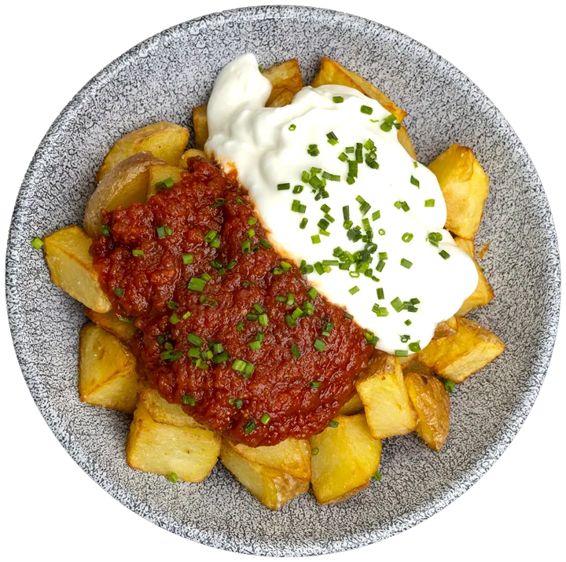

Pocas tapas generan tanta conversación como las patatas bravas. Todo el mundo tiene un bar donde «las hacen mejor que en ningún sitio», y basta sentar en una mesa a alguien de Madrid y a alguien de Barcelona para que empiece la discusión sobre si llevan tomate, alioli o ninguna de las dos cosas. Detrás de un plato tan sencillo, unas patatas fritas con salsa, hay una historia que nadie ha conseguido cerrar del todo.
Un origen madrileño, con más dudas que certezas
La versión más repetida sitúa el nacimiento de las bravas en Madrid, entre los años cincuenta y sesenta del siglo pasado. Dos bares ya desaparecidos se disputan el mérito de haberlas popularizado: Casa Pellico, en la calle Toledo, y La Casona. De Casa Pellico se cuenta que en 1960 servía dados irregulares de patata fritos en aceite de oliva y cubiertos con una salsa de tomate picante, que es lo más parecido a una partida de nacimiento que tiene este plato.
Conviene tomarlo con calma. No hay ningún estudio riguroso que lo confirme, y la historia de Casa Pellico se ha ido copiando de artículo en artículo durante años, en buena parte porque era la que aparecía en Wikipedia. Lo que sí parece claro es que en los años sesenta las bravas ya habían salido de Madrid y se servían en bares de Zaragoza, Valladolid y Barcelona, y que desde entonces cada ciudad, y casi cada bar, las ha ido adaptando a su gusto.
La salsa brava: más pimentón que tomate
La gran sorpresa para mucha gente es que la salsa brava madrileña tradicional no es una salsa de tomate. Su base es el pimentón, dulce y picante, con cebolla, y se liga con un caldo de jamón o de cocido espesado con harina. El tomate, si aparece, nunca es el protagonista. El resultado es una salsa anaranjada, untuosa y con un picor que va subiendo poco a poco, muy distinta de una simple salsa de tomate picante.
Las recetas de cocineros madrileños siguen ese camino: aceite de oliva, ajo y guindillas secas, cebolla bien pochada, los dos pimentones y la harina, un chorro de vino blanco y el caldo. Se deja hervir a fuego suave unos treinta minutos, se tritura, se cuela y se vuelve a hervir. No es una salsa rápida, y por eso cada bar que la hace desde cero acaba teniendo la suya.

Madrid, Barcelona y el alioli
En Cataluña la historia tomó otro camino. En muchos bares de Barcelona las bravas se sirven con dos salsas a la vez: un alioli y una salsa roja picante, esta sí con tomate, que a veces se acerca más a una mezcla de kétchup y mayonesa que a la receta madrileña. Para unos es una traición; para otros, la única forma de comerlas. Las dos ciudades llevan décadas medio en broma discutiéndose el título de capital de las tapas, y las bravas son uno de sus campos de batalla favoritos.
Lo cierto es que ninguna de las dos versiones es «la buena». Son dos tradiciones distintas que salen del mismo plato, y por eso hoy es tan normal encontrar bravas con salsa roja sola, con alioli solo o con las dos, como encontrar quien les añade chipotle, pimentón ahumado o cualquier otra idea de la casa.
Cómo se fríen para que queden crujientes
La salsa se lleva la fama, pero una brava con la patata blanda no la salva nadie. Un truco muy usado es freírlas dos veces: una primera fritura más suave para que la patata se haga por dentro, y una segunda a temperatura alta para que se forme la costra. Entre una y otra, y al final, hay que escurrirlas bien.
El último detalle es el más fácil de olvidar: la salsa se pone justo antes de servir. Si las patatas esperan con la salsa encima, se ablandan en pocos minutos y se pierde todo el trabajo de la doble fritura.
Las bravas en Vibra
En Vibra, en Cappont, hay dos versiones en la carta. Las Bravas Clásicas llevan lactonesa de ajo y salsa de chipotle, a medio camino entre la tradición catalana de la salsa blanca y un picante ahumado. Las Bravas Tremola llevan una salsa especial que es un homenaje al bar Tremola, el que estuvo en este mismo local antes de ser Vibra. Las dos están a 5,50 € y las encontrarás en la carta, junto a las burgers.